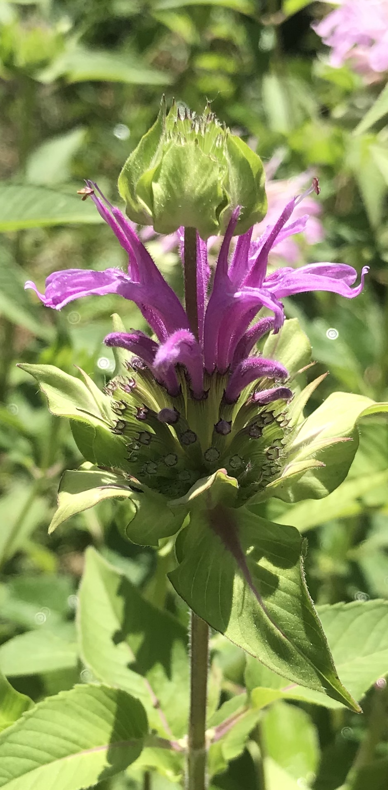
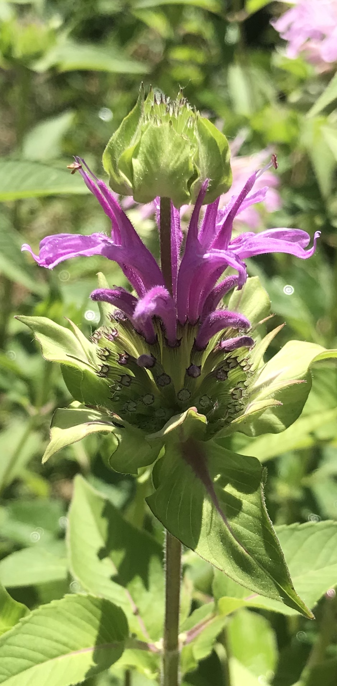

Plants
Vegetables
You can easily grow a small garden to supply you and or friends and
family nutrient rich, environmentally friendly food that is good for
your body and mind. A small garden bed can be filled with your favorite
vegetables. Everyone I know who has started a small garden loves
it and plans to always have one incorportated into daily life.
Medicinal Plants and Herbs
Although food are the prefered plants to grow, medicinal herbs can be
incorporated into your garden as well. Sage is great for sore throats and
popular in soups and roasting meat or vegetables. Chamomile is delicous in
tea for relaxing or as a mild bittering agent for your stomach. Yarrow is
good for wound coagulaton and a mild antimicrobial. These are some of my
favorite medicinal plants to grow.
My favorite plants to grow:
- Tomatoes
- Basil
- Kale
- Lemon balm
- Melons
- Tomatillos
- Cilantro
- Favorite plants that come back every year on there own!: sage, yarrow,
dill, chamomile, chives, lettuces, radishes, yarrow, mint, lavender, bee
balm!!!
 "
"
"
"
Plants
Garden Betty
//* Content about a subject you are passionate about! (something not about coding)
* Links
* Images
* Headings
* Text in paragraphs (include two different fonts)
* A list (ordered or unordered)
* A form
* Usage of color*//